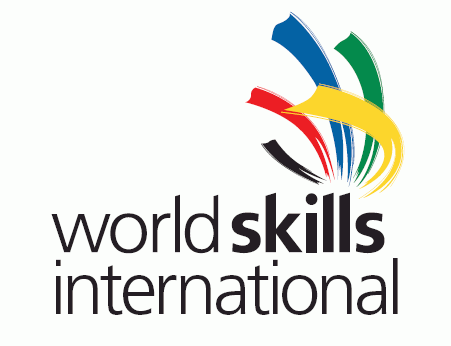

با سلام به همه دوستانی که به نجوی با مسابقات مهارت آشنا هستند شرکت کننده ها، کارشناسان و یا حتی علاقمندان! من این بررسی رو قبلا در فروم مسابقات مهارت نوشته بودم و حالا تصمیم به انتشار مجدد اون در وب سایت شخصی خودم کردم. امیدوارم این مطالب موردتون قرار بگیره
تو این تاپیک فقط هدفم بررسی مسابقات مهارت در ایران و جهان و تاثیر اون بر روی زندگی شرکت کنندگان و آینده شغلی و علمی اون هاست. قطعا در این بررسی حرف هایی زده میشه که تا حالا مطرح نشده و همین شاید باعث جبهه گیری دوستانی که سابقه شرکت دارند یا حتی شرکت کنندگان جدید بشه، ولی خواهش می کنم تمام صحبت هایی که در اینجا زده میشه با دقت مطالعه و بعد از فکر کردن درباره اون ها اگه نکته یا سوالی داشتین مطرح کنین.
قبل از شروع این بررسی برای دوستانی که منو نمی شناسن خودمو معرفی می کنم: من جواد عوض زاده متولد نوشهر هستم. تو هفتمین دوره با این مسابقات آشنا شدم ولی واسه ثبت نام دیر اقدام کردم و نشد که شرکت کنم. تو هشتمین دوره واسه اولین بار شرکت کردم، بعد از کلی بررسی رشته ها و بدست نیاوردن اطلاعات درباره ی اون ها رشته ی فناوری اطلاعات – کاربرد نرم افزارها رو انتخاب کردم. تو مسابقات شهرستانی یه نفر بیشتر نبودم و اول شدم! البته قبلش تو سایت سازمان نمونه سوالات دوره ی گذشته رو گرفته بودم و درصدی از اون رو تونسته بودم حل کنم. تو استانی تعداد بیشتر شد و فکر کنم حداقل 6 نفر بودیم! اون دوره یه بحثی بود به نام درون سازمانی و برون سازمانی، بعد از اول شدن منو به عنوان شرکت کننده دورن سازمانی به کشوری فرستادن و میکائیل جانبازی که دو دوره سابقه حضور داشت رو به عنوان شرکت کننده برون سازمانی(البته روز امتحان مایکل بالا سر ما دور میزد!)
رفته رفته اطلاعات من از این رشته بیشتر میشد و با کمک آقای سیدمجتبی حسینی تونسته بودم خودمو تا حدی واسه این مسابقات آماده کنم. تو کشوری با اینکه بد امتحان داده بودم ولی تونستم تو اولین حضورم دیپلم افتخار کسب کنم. نهمین دوره با اول شدن من تو استان مازندران و راهیابی به کشوری ادامه پیدا کرد. تو این دوره که تو مشهد بود من یکی از شانس های مدال بودم ولی خودمم نمی دونم چی شد که نشد ( البته بیشتر به جنبه روحی روانی برمیگشت) و دوباره فقط دیپلم افتخار نصیبم شد.
تو اون دوره از نفرات اول تا پنجم واسه اردوی آماده سازی کانادا دعوت شد که منم جزو اون ها بودم، اگه اشتباه نکنم 9 نفر بودیم. من اونجا بین همه کوچکترین بودم! رقیب های سرسختی داشتم البته من زیاد واسم مهم نبود و بیشتر به کسب تجربه می اندیشیدم! هرچند که همین چند وقت پیش فهمیدم تو اردوی مرحله اول کانادا تو اصفهان دوم شده بودم که خودم اصلا خبر نداشتم و شاید اگه می دونستم داستان فرق می کرد. تو مرحله دوم که کرج بود حذف شدم. و از بین حمید ظفرتوانا، میکائیل جانبازی و رضا بیات که به مرحله سوم کانادا راه پیدا کرده بودند، میکائیل جانبازی انتخاب شد و رفت و هفتم شد و با یه دیپلم از مسابقات جهانی برگشت.
گذشت و توی دهمین دوره شرکت کردم. من اون زمان دانشجوی کارشناسی نرم افزار دانشگاه آزاد قزوین بودم که به خاطر برخوردهای بد دوره گذشته استان مازندران از کرج شرکت کردم و این بار هم تو استانی اول شدم ولی این بار تو کرج! این بار دیگه مسابقات کشوری فرق می کرد و من و رضا بیات و نریمان رضازاده(نفر اول نهمین دوره) شانس های اول مدال بودیم. مخصوصا رضا بیات که تو اردوی تخصصی کانادا هم بود. این بار هم معادلات بهم خورد. من روز اول طبق شنیده ها هفتم یا هشتم بودم و حسابی خراب کردم، تو روز دوم و سوم و چهارم با اینکه جزو نفرات برتر بودم و تو چند آیتم اول شده بودم ولی نتونستم رتبه ای بهتر از دوم کسب کنم. رضا بیات هم در کمال تعجب چهارم شد. نریمان هم فکر کنم هفتم شد.
با این دومی من به اردوی مسابقات جهانی لندن 2011 هم راه پیدا کردم، هرچند اگه رتبه ای هم بدست نمی آوردم باز هم به دلیل حضورم تو اردوی کانادا به اردوی لندن هم راه پیدا کرده بودم. تو اردوی لندن بعد از سه دوره آزمون نهایتا سامان برگزیده شد و رفت و پنجم شد و با یه مدال افتخار همین چند روز پیش برگشت.
حالا شاید بگید این داستان چه ربطی به بررسی این مسابقات داره، ربطش اینه که شما الان میدونید من چه مراحلی رو طی کردم و واسه اطلاع بیشترتون بگم که من به دلیل حضورم تو این مسابقات 42 واحد درسی رو حذف کردم و حدود 15 واحد هم افتادم! البته بگم دانشگاه واسم مهم نیست و فقط به دلیل گرایش جامعه به مدرک مجبورم. حالا اینارو داشته باشید و صبر کنید تا تو پست بعدی بررسی رو شروع کنم…
دوباره سلام؛ تاخیر بین پست قبلی و این پست به خاطر یه سری دلایل بود که بابتشون ازتون عذر می خوام.
ممکنه ایم بررسی تو همین پست تموم بشه و یا تا چندین پست دیگه هم ادامه پیدا کنه، فقط می تونم بگم که هرچی به ذهنم بیاد و فکر کنم که ممکنه واسه شرکت کنندگان مفید باشه بیان می کنم. قبل از ادامه اینو بگم که درسته من تو رشته نرم افزار شرکت کننده بودم و صحبت هایی که می کنم بیشتر مربوط به این رشته هست ولی احتمالا بخش زیادی از این صحبت ها به درد همه ی شرکت کنندها تو همه رشته ها می خوره!
اول از خوبیاش بگم! این مسابقات همونطور که می دونید تقریبا برخلاف همه ی مسابقات و المپیادهای دیگه تو ایران به صورت عملی برگزار میشه که این خودش مزایای زیادی داره و از نظر من هیچ عیبی نمیشه از این بابت ازش گرفت! اسم این مسابقات تو دنیا ( WorldSkills ) هست به معنای مهارت جهانی! پس تو این مسابقات دنبال خرخونی و حفظ کردن نباشید که یه جایی بالاخره گیر می کنید، اینجا جای کسایی هست که دنبال مهارت هستن، مهارت یعنی کار یعنی درآمد یعنی پول!
اخطار: اگه شما از اون دسته بچه درس خون ها هستید که تو عمرتون فقط دنبال درس خوندن بودین و کاری جز اون انجام ندادین، دوتا پیشنهاد واستون دارم، اولیش اینه که این مسابقات رو به طور کل کنار بذارید و فراموشش کنید؛ دومین پیشنهادم هم اینه که تو این مسابقات شرکت کنید و یه سری مفاهیم زندگی که تابه حال باهاشون آشنا نشدید رو درک کنید. انتخاب با خودتونه
زیاد نمی خوام درباره ی این صحبت کنم چون اگه کسی علاقمند باشه خودش راهش رو پیدا میکنه ، فقط اینو بگم که اگه راه حل دوم رو انتخاب کردید، تو مسابقات شرکت کنید، یاد بگیرید و تجربه کسب کنید ولی سعی کنید به اندازه این چیزایی که گفتم وقتتون رو واسش صرف کنید. من تو این صحبت ها قصد دارم واسه راه رو به کسایی که تو دوراهی موندن نشون بدم. اگه مسیر شرکت تو مسابقات رو انتخاب کردین باید منتظر صحبت های بعدی من باشید.
پس اگه بچه درسخون بودین راهتون معلوم شد، میرسیم سراغ کسایی که تو فنی حرفه ای بودن(یعنی دیپلم فنی دارن یا می خوان بگیرن) واسه این دسته از بچه ها شرایط فرق داره، از نظر من اونا باید تو این مسابقات شرکت کنن، دلیلش هم اینه که اونا واسه آینده ی زندگی خودشون نیاز به مهارت دارن، مهارت تو رشته ی خودشون و این مسابقات می تونه یکی از بهترین فرصت ها تو زندگیشون واسه کسب مهارت باشه، کسب مهارت هایی که شاید تو شرایط عادی در چندین برابر این زمان کسب بشه یا اصلا نشه!
قطعا این صحبت ها مخالفت هایی خواهد داشت ولی من تو پست چیزایی رو گفتم که نشون بده من تو این مسابقات بودم، اونو حس کردم و با مشکلاتش آشنام. اینا حاصل بیش از 4 سال تجربه ی من از این مسابقاته و زیاد نیستن کسایی تا اینجا دوام آورده باشن!
یه جمع بندی کنم و این پست رو تموم کنم؛ این مسابقات شرایط خاصی داره، توش تجربه کسب میشه، چه واسه آینده ی زندگی، چه واسه آینده ی شغلی، پیشنهاد من اینه که همه توش شرکت ولی تو پست بعدی درباره زمانی که واسه این مسابقات میذارن و اهمیت اون تو زندگی صحبت هایی دارم که مکمل این پست و پست قبلی هست. امیدارم خیلی زود این بحث رو ادامه بدم. منتظر پست بعدی من باشید…